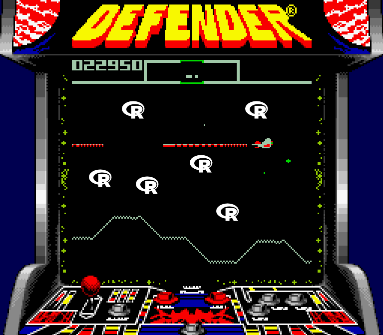

defender 
The goal of defender is to do static code analysis on other R packages to check for potential security risks and best practices. It provides checks on multiple levels:
- [x] static code analysis without installing the package
- [ ] more thorough but potentially dangerous checks with installation / in Docker container
The checks do not tell you whether something is harmful but rather they flag code that you should double-check before running / loading the package.
Installation
You can install defender from github with:
# install.packages("devtools")
devtools::install_github("ropenscilabs/defender")Example
System calls in R scripts
You can check for system calls in any directory locally available:
defender::summarize_system_calls("../testevil")
#> path line_number function_name
#> 1 inst/root_sys.R 1 system2
#> 2 inst/root_sys.R 4 system
#> 3 R/exported.R 7 system2
#> 4 R/internal.R 4 system
#> 5 R/internal.R 8 system
#> 6 R/processx.R 3 run
#> 7 R/system_hidden.R 2 system2You can also include additional elements to flag as dangerous:
sc <- defender::system_calls("poll")
defender::summarize_system_calls("../testevil", calls_to_flag = sc)
#> path line_number function_name
#> 1 inst/root_sys.R 1 system2
#> 2 inst/root_sys.R 4 system
#> 3 R/exported.R 7 system2
#> 4 R/internal.R 4 system
#> 5 R/internal.R 8 system
#> 6 R/processx.R 3 run
#> 7 R/processx.R 9 poll
#> 8 R/system_hidden.R 2 system2